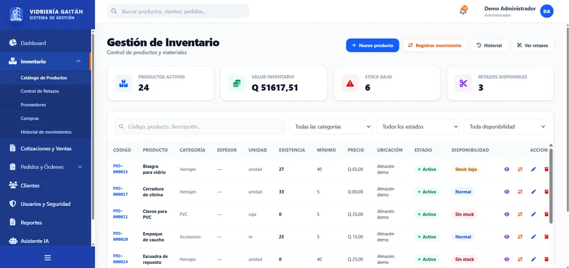
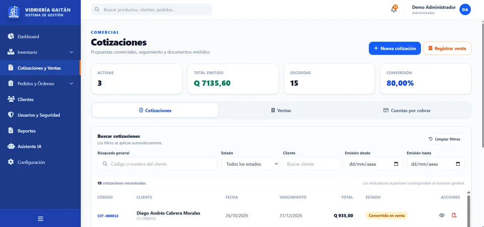
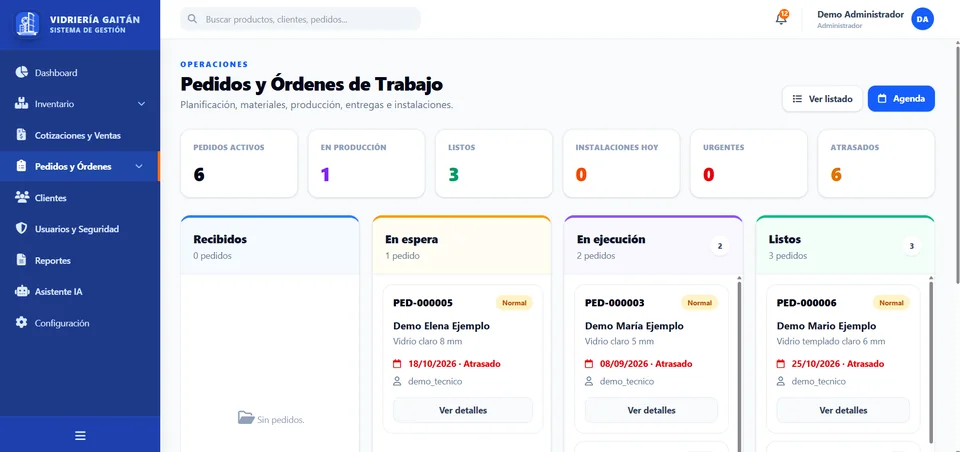
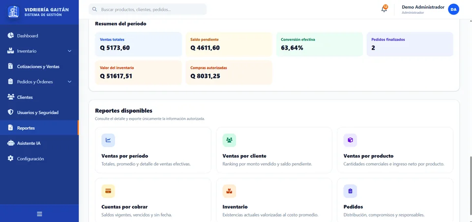
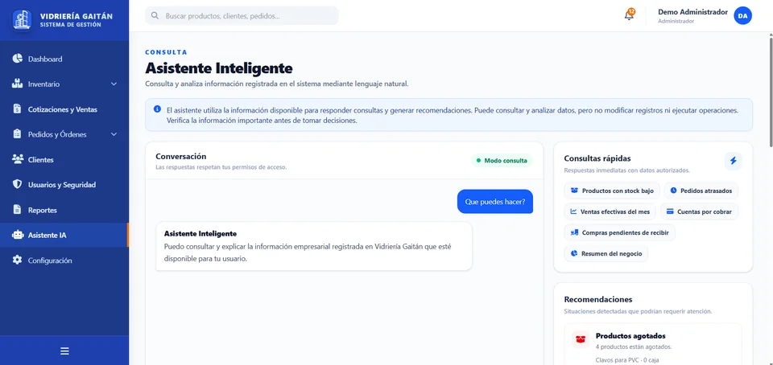

Vidriería Gaitán
Contexto del proyecto
Problema
La gestión de una vidriería requiere coordinar la atención a clientes, la disponibilidad de materiales y el seguimiento comercial y operativo.
Solución
Integré un panel administrativo para gestionar inventario, clientes y usuarios, registrar cotizaciones y ventas y dar seguimiento a pedidos y órdenes de trabajo. El sistema incluye reportes de análisis operativo y un asistente de inteligencia artificial que utiliza la API de Gemini.
Tecnologías y despliegue
- Aplicación
- Python y Django, con JavaScript, Alpine.js y Tailwind CSS para la interfaz.
- Datos
- PostgreSQL para la información operativa del sistema.
- Despliegue
- Ubuntu en AWS Lightsail, con Nginx y Gunicorn.
Retos técnicos y soluciones
Acceso por roles
Django exige iniciar sesión y comprueba los permisos de cada operación. Los roles agrupan permisos como consultar el inventario, editar productos o registrar movimientos.
Existencias y pedidos
El registro de movimientos usa transacciones y bloquea las salidas que dejarían existencias negativas. Los pedidos solo admiten los cambios definidos para su estado actual.
Consultas con Gemini
La API de Gemini interpreta preguntas en lenguaje natural. Django ejecuta las consultas de solo lectura según los permisos del usuario.
Funcionalidades en pantalla
Del catálogo de materiales al seguimiento comercial y operativo.
Las capturas muestran datos de demostración.


Gestión de inventario
Catálogo de productos y materiales con filtros y acceso al registro de movimientos.


Cotizaciones
Seguimiento de propuestas comerciales con filtros por cliente, fecha y estado.


Pedidos y órdenes de trabajo
Tablero de órdenes de trabajo organizado por etapa de producción y entrega.


Reportes
Consultas de ventas, cuentas por cobrar, inventario y pedidos.


Asistente inteligente
Consultas en lenguaje natural sobre información autorizada para el usuario.
Desarrollo e implementación
- Proceso
- Partí de los requerimientos de Vidriería Gaitán y diseñé módulos para la gestión comercial, el inventario y el seguimiento de pedidos.
- Mi participación
- Desarrollé el sistema de forma individual y me encargué de las pruebas, la documentación, el despliegue en la nube y la entrega.
- Resultado
- Vidriería Gaitán recibió y aceptó el sistema.